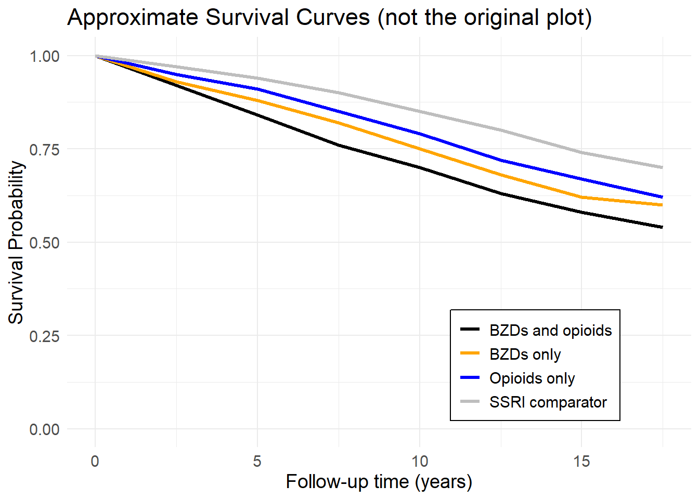

Replicate Data Creation
National Health and Nutrition Examination Survey (NHANES)
The National Health and Nutrition Examination Survey (NHANES) is a program of studies designed to assess the health and nutritional status of adults and children in the United States. The survey is unique in that it combines interviews, physical examinations, and laboratory data, providing comprehensive health information. NHANES data are collected by the National Center for Health Statistics (NCHS), part of the Centers for Disease Control and Prevention (CDC). NHANES has data releases in two-year cycles. Each cycle contains a representative sample of the U.S. population, collected using a complex, multistage probability sampling design. NHANES is also linked to mortality data through the National Death Index (NDI), allowing researchers to examine the relationship between health status, risk factors, and mortality.
Current Analysis
The NHANES datasets used in this analysis for lab exercise (2) are extracted from multiple cycles (1999-2014) and harmonized to ensure consistency across survey waves. The variables examined in this study include demographic information, health status, medical conditions, prescription medication use, and mortality status.
General aim
The primary aim of this analysis is to investigate the association between benzodiazepine use, with or without opioids, and all-cause mortality in adults aged 20 years or older. The study will compare the mortality risk between benzodiazepine users and a comparator group using selective serotonin reuptake inhibitors (SSRIs). The analysis will adjust for potential confounders.
PICOT of the Analysis
P (Population): Adults aged 20 years or older who participated in the NHANES from 1999 to 2015.
I (Intervention): Use of benzodiazepines with or without opioids.
C (Comparison): Selective serotonin reuptake inhibitors (SSRIs) as an active comparator group. This group includes individuals using SSRIs but not opioids or benzodiazepines.
O (Outcome): All-cause mortality, ascertained via linkage to the National Death Index. The hazard ratios for mortality were compared between the intervention groups and the SSRI comparator group.
T (Time): 1999 to 2015. A median follow-up time of 6.7 years (range, 0.2 to 16.8 years) was used to measure outcomes.
Variables under consideration
1. Mortality Data
The mortality data is critical for assessing all-cause mortality and linking it to other variables such as medication use and comorbidities. NHANES data is linked to the National Death Index (NDI) for mortality follow-up.
- SEQN: Participant ID (unique identifier for each survey participant)
- mortstat: Mortality status (1 = deceased, 0 = alive)
- permth_int: Number of months between the date of NHANES exam and death or last follow-up (used to calculate follow-up time for mortality analysis)
- permth_exm: Number of months between the date of examination and mortality ascertainment (useful for establishing the timeline of events)
- CYCLE: NHANES survey cycle (e.g., 1999-2000, 2001-2002), used for cohort stratification
2. Demographic Data
Demographic data is important for adjusting models based on confounders such as age, gender, and socioeconomic status.
- SEQN: Participant ID (unique identifier for each survey participant)
- CYCLE: NHANES survey cycle (e.g., 1999-2000, 2001-2002)
- SDMVSTRA: Masked variance pseudo-stratum (used for complex survey design to account for the stratified sample design)
- SDMVPSU: Masked variance pseudo-primary sampling unit (PSU) (used for adjusting the sampling structure in analyses)
- WTMEC2YR: Sample MEC (Mobile Examination Center) exam weight for 2-year analysis (used to weight the sample to be nationally representative)
- RIDSTATR: Interview/examination status (1 = Interviewed only, 2 = Both interviewed and MEC examined, used for completeness of the data)
- RIDAGEYR: Age in years at screening (collected as part of the demographic questionnaire, age is a critical confounder in mortality analyses)
- RIAGENDR: Gender (1 = Male, 2 = Female, often included in stratified analyses)
- DMDEDUC2: Education level (assessed for adults aged 20 years or older, higher education often correlates with better health outcomes)
- INDFMPIR: Family monthly poverty income ratio (calculated from household income and family size, used as a proxy for socioeconomic status)
- RIDRETH1: Race/ethnicity (1 = Mexican American, 2 = Other Hispanic, 3 = Non-Hispanic White, 4 = Non-Hispanic Black, 5 = Other Race, including multiracial)
- DMDMARTL: Marital status (1 = Married, 2 = Widowed, 3 = Divorced, marital status can impact social support, which is linked to health outcomes)
3. Smoking Questionnaire (SMQ) Data
Smoking is a significant risk factor for many chronic conditions and can interact with medication use.
-
SMOKING_HARMONIZED: Harmonized smoking variable [SMQ020/SMQ040] created by harmonizing data across survey cycles.
- SMQ020: Smoking status (Have you smoked at least 100 cigarettes in your life? Yes/No). This determines if the participant is ever a smoker.
- SMQ040: Smoking frequency (Do you now smoke cigarettes? Responses: Every day, Some days, Not at all), used to assess current smoking behavior.
4. Blood Pressure (BPQ) Data
Blood pressure is a well-established predictor of cardiovascular disease and is often controlled by medications that could influence mortality.
- BPQ020: Ever told had high blood pressure (diagnosis of hypertension, one of the most important cardiovascular risk factors)
-
LIPIDEM_HARMONIZED: Harmonized lipidemia variable [BPQ060/BPQ080], combining data on cholesterol treatment across cycles.
- BPQ060: Taking prescription for hypertension (Are you now taking prescribed medicine for high blood pressure?)
- BPQ080: Blood pressure checked in past 6 months (Have you had your blood pressure checked by a doctor or health professional in the past 6 months?)
5. Diabetes Questionnaire (DIQ) Data
Diabetes is a major chronic condition that affects many body systems, and managing blood sugar levels is crucial in preventing complications.
- DIQ010: Doctor told you have diabetes (Has a doctor or other health professional ever told you that you have diabetes?)
6. Medical Conditions (MCQ) Data
This section includes a variety of conditions that are strongly linked to mortality outcomes, and their interactions with medication use are key areas of study.
- MCQ160F: Ever told you had a stroke (Has a doctor or other health professional ever told you that you had a stroke?)
- MCQ160E: Ever told you had a heart attack (Has a doctor or other health professional ever told you that you had a heart attack?)
- MCQ160B: Ever told you had congestive heart failure (Has a doctor or health professional ever told you that you had congestive heart failure?)
-
PULMOND_HARMONIZED: Harmonized pulmonary condition variable [MCQ160G/MCQ160K/MCQ160O] (this variable combines data on chronic lung diseases like asthma and emphysema)
- MCQ160G: Ever told you had emphysema? (Has a doctor or other health professional ever told you that you had emphysema?)
- MCQ160K: Ever told you had chronic bronchitis? (Has a doctor or other health professional ever told you that you had chronic bronchitis?)
- MCQ160O: Ever told you had asthma? (Has a doctor or other health professional ever told you that you had asthma?)
- MCQ160L: Ever told you had liver condition (Has a doctor or other health professional ever told you that you had liver disease?)
- MCQ160A: Ever told you had arthritis (Has a doctor or other health professional ever told you that you have arthritis?)
- MCQ220: Ever told you had cancer or malignancy (Have you ever been told by a doctor or other health professional that you had cancer or a malignancy?)
7. Kidney Conditions (KIQ) Data
Kidney disease can complicate treatment for other conditions and impacts drug clearance, influencing the effectiveness and toxicity of medications.
-
KIDNEYD_HARMONIZED: Harmonized kidney disease variable [KIQ020/KIQ022], capturing the presence of chronic kidney disease across survey cycles.
- KIQ020: Ever told you had weak/failing kidneys (Has a doctor or other health professional ever told you that you had weak or failing kidneys?)
- KIQ022: On regular dialysis (Are you now on regular dialysis?)
8. Alcohol Use (ALQ) Data
Alcohol use can interact with many medications, influencing their effectiveness and the risk of side effects.
-
REGULAR_DRINKING: Harmonized regular drinker status [ALQ100/ALD100/ALQ110/ALQ120U/ALQ120Q]
- ALQ100: Had at least 12 drinks in a year (Have you had at least 12 drinks of any kind of alcoholic beverage in any one year?)
- ALQ120Q: Number of days per week/month/year drank alcohol over the past 12 months (On how many days per week, per month, or per year did you have at least one alcoholic drink?)
- ALQ120U: Time unit for drinking frequency (week, month, or year; used in conjunction with ALQ120Q to specify drinking frequency over the past 12 months)
- ALQ130: Days had 5 or more drinks in past year (During the past 12 months, on how many days did you have 5 or more drinks of any alcoholic beverage?)
9. Physical Functioning Questionnaire (PFQ) Data
Physical functioning measures are important indicators of overall health and functional status, especially in older adults.
- PFQ090: Emergency room care in the last 12 months (During the past 12 months, have you been to a hospital emergency room about your health?)
10. Health Questionnaire (HUQ) Data
Healthcare utilization and self-reported health are important predictors of future healthcare needs and mortality.
-
ANYHOSP_INLASTYEAR: Harmonized indicator of any hospital visit in last year [HUD070/HUQ070/HUQ071]
- HUQ070: Overnight stay in the hospital in the past 12 months (In the past 12 months, how many times have you been hospitalized for one night or more?)
- HUD070: Overnight hospital stays in the past 12 months (In the past 12 months, how many nights have you spent in the hospital?)
- HUQ071: Seen a mental health professional in the past year (In the past 12 months, have you seen or talked to a mental health professional?)
- NUMHOSP_INLASTYEAR: Harmonized number of hospitalizations in last year [HUD080/HUQ080] (How many overnight hospital stays did you have in the past 12 months?)
- REGULAR_EDCARE: Harmonized type or place most often go for healthcare [HUQ040/HUQ041]
- HUQ090: Seen a mental health professional in past year (In the past 12 months, have you seen or talked to a mental health professional?)
- HUQ010: General health condition (Would you say your health in general is: Excellent, Very Good, Good, Fair, or Poor?)
- HUQ070, HUQ071: Hospital visits in the past year (indicator of healthcare utilization)
11. Prescription Drug Data (RXQ)
The prescription drug data is extracted from the RXQ_RX and RXQ_DRUG tables, focusing on different classes of medications. The following are the specific drug classes and their associated codes from the dataset:
-
benzodiazepines: Medications typically used for anxiety, insomnia, and other conditions. The following drug codes were used for benzodiazepines:
-
d00238,d00917,a56545,d00384,d00189,d03492,d00329,h00012,d05416,d03462,d00198,d00148,a54760,d04557,d00197,d00149,d00168,d00040,h00001,d00397,d00915,d00910,d04452,d07994
-
-
opioids: Prescription pain medications. The drug codes for opioids include:
-
a10129,d00012,d00017,d00050,d00233,d00255,d00308,d00329,d00334,d00360,d00824,d00833,d00840,d03075,d03340,d03346,d03352,d03353,d03356,d03357,d03361,d03362,d03363,d03364,d03366,d03367,d03375,d03393,d03394,d03396,d03398,d03399,d03403,d03404,d03407,d03416,d03423,d03424,d03425,d03426,d03428,d03429,d03430,d03431,d03432,d03433,d03434,d03435,d03436,d03470,d03576,d03630,d03676,d03682,d03826,d03915,d04152,d04225,d04269,d04752,d04766,d04819,d04870,d04880,d04904,d04925,d05426,d06058,d06669,d07453,h00008,h00018
-
-
SSRIs (Selective serotonin reuptake inhibitors): These are a class of antidepressants used to treat depression and anxiety disorders. The following drug codes represent SSRIs:
-
d00236,d00880,d03157,d03804,d04332,d04812
-
-
antidepressants: This category includes other antidepressants like SNRIs, MAOIs, or TCAs. The codes include:
- These are medications used for treating major depressive disorders.
- Antidepressants codes: Derived from RDX/RX_DRUG data tables and include various types of antidepressants.
antidepres_othr: Other antidepressants reported. Includes drugs classified under various types of antidepressants not captured by the major classes (SNRIs, MAOIs, SSRIs).
-
antipsychotics: Medications used to manage psychosis (including schizophrenia and bipolar disorder). The codes for antipsychotics include:
-
d00148,d00917,d00197,d00329,d03462,d04557,d05416,d03492,d00149,d00198,d00384,d00915,d04452,d00910,d07994,d00397,h00012,a54760,d00168,d00040,h00001
-
-
analgesics: Pain relief medications.
- Codes include:
d00012,d03403,d03404,d03407,d03416,d03423,d03424,d03425,d03426,d03428,d03429,d03430,d03431,d03432,d03433,d03434,d03435,d03436,d03470
- Codes include:
-
muscle_relax: Medications used to relax muscles and relieve pain caused by muscle conditions.
- Codes include:
d03340,d03356
- Codes include:
-
anticonvulsants: Medications used to prevent or treat seizures.
- Codes include:
d03423,d03436
- Codes include:
-
hormonalagents: Medications used for hormone replacement or modulation (such as estrogen, progesterone).
- Codes include:
d04052,d00119
- Codes include:
-
gastrointestin: Medications used for gastrointestinal issues, such as GERD or ulcers.
- Codes include:
d03075,d00149
- Codes include:
-
cardi_metab_ag: Cardiovascular and metabolic agents, including medications for hypertension, cholesterol management, etc.
- Codes include:
d00578,d00913
- Codes include:
-
resp_antihist: Respiratory medications and antihistamines used for asthma, allergies, or other respiratory conditions.
- Codes include:
d00221,d00360
- Codes include:
cns_morethan2: Indicates cases where > 2 CNS (central nervous system) medications are reported.
ncns_lessthan5: Indicates cases where < 5 NCNS (non-CNS) medications are reported.
The drug codes are mapped to each class of medications using the NHANES RXQ_RX and RXQ_DRUG tables.
Code Hints
# Loading packages
if (!require("tidyverse")) install.packages("tidyverse")
# To wrangle data using Tidyverse principles
if (!require("nhanesA")) install.packages("nhanesA")
# To load NHANES data directly from CDC
if (!require("rio")) install.packages("rio")
# A package to simplify data import/export
library(tidyverse)
library(nhanesA)
library(rio)MORTALITY DATA TABLE
This section loads the mortality data from NHANES, which has been linked to the National Death Index (NDI). Mortality data are critical for survival analyses, allowing us to study the relationship between health risk factors, treatments (such as medication use), and all-cause mortality. Variables like mortality status (mortstat) and follow-up time (permth_int, permth_exm) are used to calculate the time-to-event and identify if and when a participant passed away. See previous tutorial about how to access such data.
## Specifying files
infile <- list.files(paste0(getwd(), '/Data/nhanes-external-data/'), full.names = TRUE)
## Specifying variables
vnames <- c('SEQN', 'mortstat', 'permth_int', 'permth_exm', 'CYCLE')
## Loading data
d.nhanes <-
lapply(X = infile[-10],
FUN = function(.x) read_fwf(file = .x,
col_types = "ciiiiiiidd",
fwf_cols(SEQN = c(1,6),
eligstat = c(15,15),
mortstat = c(16,16),
ucod_leading = c(17,19),
diabetes = c(20,20),
hyperten = c(21,21),
permth_int = c(43,45),
permth_exm = c(46,48)),
na = c("", "."))) |>
bind_rows(.id = 'CYCLE') |>
select(any_of(vnames)) |>
## Generating a survey cycle identifier
mutate(CYCLE = case_when(CYCLE == 1 ~ '1999-2000',
CYCLE == 2 ~ '2001-2002',
CYCLE == 3 ~ '2003-2004',
CYCLE == 4 ~ '2005-2006',
CYCLE == 5 ~ '2007-2008',
CYCLE == 6 ~ '2009-2010',
CYCLE == 7 ~ '2011-2012',
CYCLE == 8 ~ '2013-2014',
CYCLE == 9 ~ '2015-2016 [UNUSED]'))DEMOGRAPHIC DATA TABLE
Demographic data from NHANES, including age, gender, race/ethnicity, and socioeconomic status, are essential covariates in the analysis. These variables help in adjusting for potential confounders when studying health outcomes like mortality. NHANES data is collected in multiple cycles, and variables like sampling weights (WTMEC2YR), masked variance strata (SDMVSTRA, SDMVPSU), and interview status (RIDSTATR) ensure accurate analysis using the complex survey design. See previous tutorial about how to access demographic data.
## Specifying variables
vnames <- c('SEQN', 'CYCLE', 'SDMVSTRA', 'SDMVPSU', 'WTMEC2YR', 'RIDSTATR',
'RIDAGEYR', 'RIAGENDR', 'DMDEDUC2', 'INDFMPIR', 'RIDRETH1', 'DMDMARTL')
## Loading data
## NOTE: A variable `CYCLE` is generated reflecting the survey cycle
d.add <-
bind_rows(nhanes(translated = TRUE, nh_table = 'DEMO') |> mutate(CYCLE = '1999-2000') |> select(any_of(vnames)),
nhanes(translated = TRUE, nh_table = 'DEMO_B') |> mutate(CYCLE = '2001-2002') |> select(any_of(vnames)),
nhanes(translated = TRUE, nh_table = 'DEMO_C') |> mutate(CYCLE = '2003-2004') |> select(any_of(vnames)),
nhanes(translated = TRUE, nh_table = 'DEMO_D') |> mutate(CYCLE = '2005-2006') |> select(any_of(vnames)),
nhanes(translated = TRUE, nh_table = 'DEMO_E') |> mutate(CYCLE = '2007-2008') |> select(any_of(vnames)),
nhanes(translated = TRUE, nh_table = 'DEMO_F') |> mutate(CYCLE = '2009-2010') |> select(any_of(vnames)),
nhanes(translated = TRUE, nh_table = 'DEMO_G') |> mutate(CYCLE = '2011-2012') |> select(any_of(vnames)),
nhanes(translated = TRUE, nh_table = 'DEMO_H') |> mutate(CYCLE = '2013-2014') |> select(any_of(vnames))) |>
tibble() |>
## Correcting inconsistencies with RIDSTATR coding
mutate(RIDSTATR = fct_collapse(RIDSTATR,
'interview only' = c('Interviewed Only', 'Interviewed only'),
'int + mec exam' = c('Both Interviewed and MEC examined',
'Both interviewed and MEC examined'))) |>
## Resetting `Don't know` and `Refused` factor levels to missing
mutate(across(where(is.factor), ~fct_recode(.,
NULL = "Don't know",
NULL = "Don't Know",
NULL = "Refused")))
## Joining data tables
d.nhanes <-
full_join(x = d.nhanes |> mutate(SEQN = as.integer(SEQN)),
y = d.add |> mutate(SEQN = as.integer(SEQN)),
by = join_by(SEQN, CYCLE))SMOKING QUESTIONNAIRE (SMQ) DATA TABLE
Smoking is a significant health risk factor associated with various diseases. This section harmonizes data across cycles for the smoking variables. SMQ020 captures whether a participant has ever smoked, while SMQ040 assesses their current smoking frequency (daily, some days, or not at all). Harmonized smoking data is used in regression models to adjust for smoking-related risks.
## Specifying variables
vnames <- c('SEQN', 'SMQ020', 'SMQ040')
## Loading data
d.add <-
bind_rows(nhanes(translated = TRUE, nh_table = 'SMQ') |> select(any_of(vnames)),
nhanes(translated = TRUE, nh_table = 'SMQ_B') |> select(any_of(vnames)),
nhanes(translated = TRUE, nh_table = 'SMQ_C') |> select(any_of(vnames)),
nhanes(translated = TRUE, nh_table = 'SMQ_D') |> select(any_of(vnames)),
nhanes(translated = TRUE, nh_table = 'SMQ_E') |> select(any_of(vnames)),
nhanes(translated = TRUE, nh_table = 'SMQ_F') |> select(any_of(vnames)),
nhanes(translated = TRUE, nh_table = 'SMQ_G') |> select(any_of(vnames)),
nhanes(translated = TRUE, nh_table = 'SMQ_H') |> select(any_of(vnames))) |>
tibble()
## Joining data tables
d.nhanes <-
full_join(x = d.nhanes |> mutate(SEQN = as.numeric(SEQN)),
y = d.add |> mutate(SEQN = as.numeric(SEQN)),
by = join_by(SEQN))BLOOD PRESSURE (BPQ) DATA TABLE
Blood pressure data are vital for assessing cardiovascular risk. High blood pressure (hypertension) is one of the primary risk factors for heart disease, stroke, and mortality. The data captures whether participants were diagnosed with high blood pressure (BPQ020), whether they are taking medications for hypertension (BPQ060), and if they have had their blood pressure checked recently (BPQ080).
## Specifying variables
vnames <- c('SEQN', 'BPQ020', 'BPQ060', 'BPQ080')
## Loading data
d.add <-
bind_rows(nhanes(translated = TRUE, nh_table = 'BPQ') |> select(any_of(vnames)),
nhanes(translated = TRUE, nh_table = 'BPQ_B') |> select(any_of(vnames)),
nhanes(translated = TRUE, nh_table = 'BPQ_C') |> select(any_of(vnames)),
nhanes(translated = TRUE, nh_table = 'BPQ_D') |> select(any_of(vnames)),
nhanes(translated = TRUE, nh_table = 'BPQ_E') |> select(any_of(vnames)),
nhanes(translated = TRUE, nh_table = 'BPQ_F') |> select(any_of(vnames)),
nhanes(translated = TRUE, nh_table = 'BPQ_G') |> select(any_of(vnames)),
nhanes(translated = TRUE, nh_table = 'BPQ_H') |> select(any_of(vnames))) |>
tibble()
## Joining data tables
d.nhanes <-
full_join(x = d.nhanes |> mutate(SEQN = as.numeric(SEQN)),
y = d.add |> mutate(SEQN = as.numeric(SEQN)),
by = join_by(SEQN))DIABETES QUESTIONNAIRE (DIQ) DATA TABLE
Diabetes is a major chronic condition that impacts overall health and mortality risk. This section loads data on diabetes diagnoses (DIQ010). Diabetes status is essential in the analysis as it affects multiple organ systems and interacts with other risk factors like medication use, making it an important variable in mortality analysis.
## Specifying variables
vnames <- c('SEQN', 'DIQ010')
## Loading data
d.add <-
bind_rows(nhanes(translated = TRUE, nh_table = 'DIQ') |> select(any_of(vnames)),
nhanes(translated = TRUE, nh_table = 'DIQ_B') |> select(any_of(vnames)),
nhanes(translated = TRUE, nh_table = 'DIQ_C') |> select(any_of(vnames)),
nhanes(translated = TRUE, nh_table = 'DIQ_D') |> select(any_of(vnames)),
nhanes(translated = TRUE, nh_table = 'DIQ_E') |> select(any_of(vnames)),
nhanes(translated = TRUE, nh_table = 'DIQ_F') |> select(any_of(vnames)),
nhanes(translated = TRUE, nh_table = 'DIQ_G') |> select(any_of(vnames)),
nhanes(translated = TRUE, nh_table = 'DIQ_H') |> select(any_of(vnames))) |>
tibble()
## Joining data tables
d.nhanes <-
full_join(x = d.nhanes |> mutate(SEQN = as.numeric(SEQN)),
y = d.add |> mutate(SEQN = as.numeric(SEQN)),
by = join_by(SEQN))MEDICAL CONDITIONS (MCQ) DATA TABLE
NHANES collects self-reported data on various medical conditions, many of which are associated with higher mortality. The data includes conditions such as stroke (MCQ160F), heart attack (MCQ160E), congestive heart failure (MCQ160B), and liver disease (MCQ160L). Harmonized variables like PULMOND_HARMONIZED combine data across cycles for conditions like emphysema, chronic bronchitis, and asthma. This section integrates these variables for assessing the health status of participants.
## Specifying variables
vnames <- c('SEQN', 'MCQ160F', 'MCQ160E', 'MCQ160B', 'MCQ160G', 'MCQ160K', 'MCQ160O', 'MCQ160L',
'MCQ160A', 'MCQ220')
## Loading data
d.add <-
bind_rows(nhanes(translated = TRUE, nh_table = 'MCQ') |> select(any_of(vnames)),
nhanes(translated = TRUE, nh_table = 'MCQ_B') |> select(any_of(vnames)),
nhanes(translated = TRUE, nh_table = 'MCQ_C') |> select(any_of(vnames)),
nhanes(translated = TRUE, nh_table = 'MCQ_D') |> select(any_of(vnames)),
nhanes(translated = TRUE, nh_table = 'MCQ_E') |> select(any_of(vnames)),
nhanes(translated = TRUE, nh_table = 'MCQ_F') |> select(any_of(vnames)),
nhanes(translated = TRUE, nh_table = 'MCQ_G') |> select(any_of(vnames)),
nhanes(translated = TRUE, nh_table = 'MCQ_H') |> select(any_of(vnames))) |>
tibble()
## Joining data tables
d.nhanes <-
full_join(x = d.nhanes |> mutate(SEQN = as.numeric(SEQN)),
y = d.add |> mutate(SEQN = as.numeric(SEQN)),
by = join_by(SEQN))KIDNEY CONDITIONS (KIQ) DATA TABLE
Chronic kidney disease (CKD) is associated with increased mortality due to its effects on cardiovascular health and drug metabolism. This section captures kidney disease status (KIQ020) and whether participants are on dialysis (KIQ022). These variables are used to stratify participants by kidney function in the analysis.
## Specifying variables
vnames <- c('SEQN', 'KIQ020', 'KIQ022')
## Loading data
d.add <-
bind_rows(nhanes(translated = TRUE, nh_table = 'KIQ') |> select(any_of(vnames)),
nhanes(translated = TRUE, nh_table = 'KIQ_U_B') |> select(any_of(vnames)),
nhanes(translated = TRUE, nh_table = 'KIQ_U_C') |> select(any_of(vnames)),
nhanes(translated = TRUE, nh_table = 'KIQ_U_D') |> select(any_of(vnames)),
nhanes(translated = TRUE, nh_table = 'KIQ_U_E') |> select(any_of(vnames)),
nhanes(translated = TRUE, nh_table = 'KIQ_U_F') |> select(any_of(vnames)),
nhanes(translated = TRUE, nh_table = 'KIQ_U_G') |> select(any_of(vnames)),
nhanes(translated = TRUE, nh_table = 'KIQ_U_H') |> select(any_of(vnames))) |>
tibble()
## Joining data tables
d.nhanes <-
full_join(x = d.nhanes |> mutate(SEQN = as.numeric(SEQN)),
y = d.add |> mutate(SEQN = as.numeric(SEQN)),
by = join_by(SEQN))ALCOHOL USE (ALQ) DATA TABLE
Alcohol use affects overall health and interacts with many medications. NHANES collects data on drinking habits, including the frequency of alcohol consumption (ALQ120Q, ALQ120U) and binge drinking behavior (ALQ130). Harmonized variables like REGULAR_DRINKING are derived from these data to capture regular alcohol use, which is a critical covariate in mortality models.
## Specifying variables
vnames <- c('SEQN', 'ALQ100', 'ALD100', 'ALQ101', 'ALQ110', 'ALQ120Q', 'ALQ120U', 'ALQ130')
## Loading data
d.add <-
bind_rows(nhanes(translated = TRUE, nh_table = 'ALQ') |> select(any_of(vnames)),
nhanes(translated = TRUE, nh_table = 'ALQ_B') |> select(any_of(vnames)),
nhanes(translated = TRUE, nh_table = 'ALQ_C') |> select(any_of(vnames)),
nhanes(translated = TRUE, nh_table = 'ALQ_D') |> select(any_of(vnames)),
nhanes(translated = TRUE, nh_table = 'ALQ_E') |> select(any_of(vnames)),
nhanes(translated = TRUE, nh_table = 'ALQ_F') |> select(any_of(vnames)),
nhanes(translated = TRUE, nh_table = 'ALQ_G') |> select(any_of(vnames)),
nhanes(translated = TRUE, nh_table = 'ALQ_H') |> select(any_of(vnames))) |>
tibble()
## Joining data tables
d.nhanes <-
full_join(x = d.nhanes |> mutate(SEQN = as.numeric(SEQN)),
y = d.add |> mutate(SEQN = as.numeric(SEQN)),
by = join_by(SEQN))PHYSICAL FUNCTIONING QUESTIONNAIRE (PFQ) DATA TABLE
The Physical Functioning Questionnaire assesses participants’ functional status, which is particularly important in older adults. This section includes data on emergency room visits in the past 12 months (PFQ090), which indicates acute health problems and healthcare utilization, often linked with higher mortality risk.
## Specifying variables
vnames <- c('SEQN', 'PFQ090')
## Loading data
d.add <-
bind_rows(nhanes(translated = TRUE, nh_table = 'PFQ') |> select(any_of(vnames)),
nhanes(translated = TRUE, nh_table = 'PFQ_B') |> select(any_of(vnames)),
nhanes(translated = TRUE, nh_table = 'PFQ_C') |> select(any_of(vnames)),
nhanes(translated = TRUE, nh_table = 'PFQ_D') |> select(any_of(vnames)),
nhanes(translated = TRUE, nh_table = 'PFQ_E') |> select(any_of(vnames)),
nhanes(translated = TRUE, nh_table = 'PFQ_F') |> select(any_of(vnames)),
nhanes(translated = TRUE, nh_table = 'PFQ_G') |> select(any_of(vnames)),
nhanes(translated = TRUE, nh_table = 'PFQ_H') |> select(any_of(vnames))) |>
tibble()
## Joining data tables
d.nhanes <-
full_join(x = d.nhanes |> mutate(SEQN = as.numeric(SEQN)),
y = d.add |> mutate(SEQN = as.numeric(SEQN)),
by = join_by(SEQN))HEALTH QUESTIONNAIRE (HUQ) DATA TABLE
The Health Questionnaire provides insight into healthcare utilization and self-reported health status, both of which are predictors of mortality. This section integrates variables like mental health visits (HUQ090), overall health ratings (HUQ010), and hospitalizations (ANYHOSP_INLASTYEAR, NUMHOSP_INLASTYEAR). These variables help capture participants’ interactions with the healthcare system and their overall well-being.
## Specifying variables
vnames <- c('SEQN', 'HUQ090', 'HUQ010', 'HUQ030', 'HUQ040', 'HUQ041', 'HUQ020', 'HUQ070',
'HUQ071', 'HUD080', 'HUD070', 'HUQ080')
## Loading data
d.add <-
bind_rows(nhanes(translated = TRUE, nh_table = 'HUQ') |> select(any_of(vnames)) |> mutate(HUD080 = as.integer(HUD080)),
nhanes(translated = TRUE, nh_table = 'HUQ_B') |> select(any_of(vnames)),
nhanes(translated = TRUE, nh_table = 'HUQ_C') |> select(any_of(vnames)),
nhanes(translated = TRUE, nh_table = 'HUQ_D') |> select(any_of(vnames)),
nhanes(translated = TRUE, nh_table = 'HUQ_E') |> select(any_of(vnames)),
nhanes(translated = TRUE, nh_table = 'HUQ_F') |> select(any_of(vnames)),
nhanes(translated = TRUE, nh_table = 'HUQ_G') |> select(any_of(vnames)),
nhanes(translated = TRUE, nh_table = 'HUQ_H') |> select(any_of(vnames)) |> mutate(HUD080 = as.integer(HUD080))) |>
tibble() |>
## Standardizing coding of HUD080, for which valid values are only 1-6
mutate(HUD080 = case_when(HUD080 %in% 1:6 ~ HUD080, HUD080 == 7 | HUD080 == 99999 ~ NA))
## Joining data tables
d.nhanes <-
full_join(x = d.nhanes |> mutate(SEQN = as.numeric(SEQN)),
y = d.add |> mutate(SEQN = as.numeric(SEQN)),
by = join_by(SEQN))PRESCRIPTION MEDICATIONS - DRUG DATA (RXQ_DRUG) TABLE
Prescription drug data from NHANES is essential for analyzing the impact of medications on mortality. This section focuses on drug classes such as benzodiazepines, opioids, SSRIs, and other medications. Drug data are harmonized across cycles to account for polypharmacy and potential drug interactions. Variables like benzodiazepines, opioids, and SSRIs are used to assess whether the participant was taking these medications, which are the main exposures in the study.
## BENZODIAZEPINES
d.bz <- c("d00238", "d00917", "a56545", "d00384", "d00189",
"d03492", "d00329", "h00012", "d05416",
"d03462", "d00198", "d00148", "a54760", "d04557",
"d00197", "d00149", "d00168", "d00040",
"h00001", "d00397", "d00915", "d00910", "d04452",
"d07994")
# OPIOIDS
d.op <- c("a10129", "d00012", "d00017", "d00050", "d00233",
"d00255", "d00308", "d00329", "d00334",
"d00360", "d00824", "d00833", "d00840", "d03075",
"d03340", "d03346", "d03352", "d03353",
"d03356", "d03357", "d03361", "d03362", "d03363",
"d03364", "d03366", "d03367", "d03375",
"d03393", "d03394", "d03396", "d03398", "d03399",
"d03403", "d03404", "d03407", "d03416",
"d03423", "d03424", "d03425", "d03426", "d03428",
"d03429", "d03430", "d03431", "d03432",
"d03433", "d03434", "d03435", "d03436", "d03470",
"d03576", "d03630", "d03676", "d03682",
"d03826", "d03915", "d04152", "d04225", "d04269",
"d04752", "d04766", "d04819", "d04870",
"d04880", "d04904", "d04925", "d05426", "d06058",
"d06669", "d07453", "h00008", "h00018")
# SSRIs
d.ss <- c("d00236", "d00880", "d03157", "d03804", "d04332",
"d04812")
## Wrangling prescription data
ref.rxq <-
##-- Importing data
rio::import(infile[10], setclass = 'tibble') |>
##-- Subsetting columns
select(RXDDRGID,
RXDDCI1C, RXDDCI2C, RXDDCI3C, RXDDCI4C, # Third-level category ID
RXDDCI1B, RXDDCI2B, RXDDCI3B, RXDDCI4B, # Second-level category ID
RXDDCI1A, RXDDCI2A, RXDDCI3A, RXDDCI4A) |> # First-level category ID
##-- Changing `NA` to `0` in order to sum rowwise
mutate(across(c(RXDDCI1C:RXDDCI4A), ~ifelse(is.na(.), 0, .))) |>
##-- RX classification
##-- NOTE: Xu et al. (2020) provide insufficient instruction for replication, thus classification
##-- here relies upon labels from the "Multum Lexicon Therapeutic Classification Scheme"
##-- which can be found in the RXQ_DRUG table
mutate(.benzodiazepines = RXDDRGID %in% d.bz) |>
mutate(.opioids = RXDDRGID %in% d.op) |>
mutate(.ssris = RXDDRGID %in% d.ss) |>
mutate(.antidepressants = rowSums(across(c(RXDDCI1C:RXDDCI4C), ~ . %in% c(250, 307, 308))) > 0) |>
mutate(.antidepres_othr = rowSums(across(c(RXDDCI1C:RXDDCI4C), ~ . %in% c(76, 209, 306))) > 0) |>
mutate(.antipsychotics = rowSums(across(c(RXDDCI1C:RXDDCI4C), ~ . %in% c(77, 210, 280, 341))) > 0) |>
mutate(.analgesics = rowSums(across(c(RXDDCI1B:RXDDCI4B), ~ . %in% c(58))) > 0) |>
mutate(.muscle_relaxants = rowSums(across(c(RXDDCI1B:RXDDCI4B), ~ . %in% c(73))) > 0) |>
mutate(.anticonvulsants = rowSums(across(c(RXDDCI1B:RXDDCI4B), ~ . %in% c(64))) > 0) |>
mutate(.hormonal_agents = rowSums(across(c(RXDDCI1A:RXDDCI4A), ~ . %in% c(97))) > 0) |>
mutate(.gastrointestinal_agents = rowSums(across(c(RXDDCI1A:RXDDCI4A), ~ . %in% c(87))) > 0) |>
mutate(.cardi_metab_agents = rowSums(across(c(RXDDCI1A:RXDDCI4A), ~ . %in% c(40, 331, 358))) > 0) |>
mutate(.respiratory_antihist = rowSums(across(c(RXDDCI1A:RXDDCI4A), ~ . %in% c(122))) |
rowSums(across(c(RXDDCI1C:RXDDCI4C), ~ . %in% c(246, 267, 382))) > 0) |>
mutate(.cns = rowSums(across(c(RXDDCI1A:RXDDCI4A), ~ . %in% c(57))) > 0) |>
select(RXDDRGID, starts_with('.'))PRESCRIPTION MEDICATIONS (RXQ_RX) TABLE
This chunk extracts prescription medication data from the NHANES RXQ_RX dataset, which records the medications reported by participants. Variables like RXD030 (indicating if the participant has taken any prescription medication in the past month) and RXDUSE (another medication use indicator) are included. The data is joined with the RXQ_DRUG table to classify medications into categories (e.g., benzodiazepines, opioids, SSRIs, etc.) for analysis. It converts the data into a wide format, where medication use across different categories is captured for each participant.
## Specifying variables
vnames <- c('SEQN', 'RXD030', 'RXDUSE', 'RXDDRGID')
## Loading data
d.add <-
bind_rows(nhanes(translated = TRUE, nh_table = 'RXQ_RX') |> select(any_of(vnames)),
nhanes(translated = TRUE, nh_table = 'RXQ_RX_B') |> select(any_of(vnames)),
nhanes(translated = TRUE, nh_table = 'RXQ_RX_C') |> select(any_of(vnames)),
nhanes(translated = TRUE, nh_table = 'RXQ_RX_D') |> select(any_of(vnames)),
nhanes(translated = TRUE, nh_table = 'RXQ_RX_E') |> select(any_of(vnames)),
nhanes(translated = TRUE, nh_table = 'RXQ_RX_F') |> select(any_of(vnames)),
nhanes(translated = TRUE, nh_table = 'RXQ_RX_G') |> select(any_of(vnames)),
nhanes(translated = TRUE, nh_table = 'RXQ_RX_H') |> select(any_of(vnames))) |>
tibble() |>
##-- Joining the RXQ_DRUG data table
left_join(x = _, y = ref.rxq, by = join_by(RXDDRGID)) |>
##-- RXDDRGID is dropped
select(-RXDDRGID) |>
##-- The long-form data are converted to wide-form
mutate(index = row_number(), .by = SEQN) |>
pivot_wider(id_cols = c(SEQN, RXD030, RXDUSE),
names_from = index,
values_from = starts_with('.'))
## Joining data tables
d.nhanes <-
full_join(x = d.nhanes |> mutate(SEQN = as.numeric(SEQN)),
y = d.add |> mutate(SEQN = as.numeric(SEQN)),
by = join_by(SEQN))Merging
The merged dataset includes the main NHANES data, with harmonized variables from multiple sources. The process involves harmonizing factors like smoking, drinking, and medical conditions (e.g., pulmonary disease, kidney disease). Variables are standardized across different NHANES cycles for consistency. Key variables such as SMOKING_HARMONIZED, LIPIDEM_HARMONIZED, and REGULAR_DRINKING capture important lifestyle and medical information. The data also harmonizes prescription drug information by categorizing participants based on whether they reported taking medications like benzodiazepines, opioids, SSRIs, or other drug classes.
d.final <-
d.nhanes |>
## Converting `Don't know` and `Refused` responses to NA for factors
mutate(across(where(is.factor),
~fct_recode(., NULL = "Don't know", NULL = "Don't Know", NULL = "Refused"))) |>
## Harmonizing `smoking` [SMQ020/SMQ040]
mutate(SMOKING_HARMONIZED = case_when(SMQ020 == 'No' ~ 'LOGICAL SKIP',
str_detect(SMQ040, 'Not at all') ~ 'Not at all',
str_detect(SMQ040, 'Some days') ~ 'Some days',
str_detect(SMQ040, 'Every day') ~ 'Every day') |>
factor()) |>
## Harmonizing 'lipidemia' [BPQ060/BPQ080]
mutate(LIPIDEM_HARMONIZED = case_when(.default = BPQ080,
BPQ060 == 'No' & CYCLE %in% c('1999-2000',
'2001-2002',
'2003-2004',
'2005-2006',
'2007-2008',
'2009-2010') ~ 'No')) |>
## Harmonizing `pulmonary disease` [MCQ160G/MCQ160K/MCQ160O]
mutate(PULMOND_HARMONIZED = case_when(.default = 'No',
MCQ160G == 'Yes' | MCQ160K == 'Yes' | MCQ160O == 'Yes' ~ 'Yes',
is.na(MCQ160G) & is.na(MCQ160K) & is.na(MCQ160O) ~ NA) |>
factor()) |>
## Harmonizing `kidney disease` [KIQ020/KIQ022]
mutate(KIDNEYD_HARMONIZED = case_when(CYCLE == '1999-2000' ~ KIQ020,
!is.na(CYCLE) & CYCLE != '1999-2000' ~ KIQ022) |>
factor()) |>
## Harmonizing `regular drinking` [ALQ120Q/ALQ120U]
## NOTE: Operationalized as "on average >= 1 times per week in last year (i.e., at least 52 times in past year).
## Here, we estimate the number of "average drinking days" per year and use that as an indicator.
## Respondents who were not shown ALQ120U are coded as 'No' (e.g., < 12 drinks in past year)
mutate(ALQ120Q = case_when(ALQ120Q %in% c(777, 999) ~ NA, .default = ALQ120Q)) |>
mutate(REGULAR_DRINKING = case_when(ALD100 == 'No' & ALQ110 %in% c('No', 'Yes') ~ 'No',
ALQ100 == 'No' & ALQ110 %in% c('No', 'Yes') ~ 'No',
ALQ101 == 'No' & ALQ110 %in% c('No', 'Yes') ~ 'No',
ALQ120U == 'Year' & (ALQ120Q * 1) >= 52 ~ 'Yes',
ALQ120U == 'Year' & (ALQ120Q * 1) < 52 ~ 'No',
ALQ120U == 'Month' & (ALQ120Q * 12) >= 52 ~ 'Yes',
ALQ120U == 'Month' & (ALQ120Q * 12) < 52 ~ 'No',
ALQ120U == 'Week' & (ALQ120Q * 52) >= 52 ~ 'Yes',
ALQ120U == 'Week' & (ALQ120Q * 52) < 52 ~ 'No')) |>
## Harmonizing `any hospitalization in < 1 yr` [HUD070/HUQ070/HUQ071]
mutate(ANYHOSP_INLASTYEAR = case_when(CYCLE == '1999-2000' ~ HUQ070,
CYCLE == '2001-2002' ~ HUD070,
CYCLE %in% c('2003-2004',
'2005-2006',
'2007-2008',
'2009-2010',
'2011-2012',
'2013-2014') ~ HUQ071)) |>
## Harmonizing `> 2 overnight hospitalizations in 1 yr` [HUD080/HUQ080]
mutate(NUMHOSP_INLASTYEAR = case_when(CYCLE == '1999-2000' & HUQ070 == 'No' ~ 0,
CYCLE == '1999-2000' & HUQ070 == 'Yes' ~ HUD080,
CYCLE == '2003-2004' & HUQ071 == 'No' ~ 0,
CYCLE == '2003-2004' & HUQ071 == 'Yes' ~ HUD080,
CYCLE == '2005-2006' & HUQ071 == 'No' ~ 0,
CYCLE == '2005-2006' & HUQ071 == 'Yes' ~ HUD080,
CYCLE == '2007-2008' & HUQ071 == 'No' ~ 0,
CYCLE == '2007-2008' & HUQ071 == 'Yes' ~ HUD080,
CYCLE == '2009-2010' & HUQ071 == 'No' ~ 0,
CYCLE == '2009-2010' & HUQ071 == 'Yes' ~ HUD080,
CYCLE == '2011-2012' & HUQ071 == 'No' ~ 0,
CYCLE == '2011-2012' & HUQ071 == 'Yes' ~ HUD080,
CYCLE == '2013-2014' & HUQ071 == 'No' ~ 0,
CYCLE == '2013-2014' & HUQ071 == 'Yes' ~ HUD080,
CYCLE == '2001-2002' & HUD070 == 'No' ~ 0,
CYCLE == '2001-2002' & HUD070 == 'Yes' & HUQ080 < 6 ~ HUQ080,
CYCLE == '2001-2002' & HUD070 == 'Yes' & HUQ080 %in% 6:12 ~ 6) |>
factor(levels = 0:6, labels = c('0', '1', '2', '3', '4', '5', '6 or more'))) |>
## Harmonizing `regular ED care` [HUQ030/HUQ040/HUQ041]
mutate(REGULAR_EDCARE = case_when(CYCLE != '2013-2014' & HUQ030 == 'There is no place' ~ 'There is no place',
CYCLE != '2013-2014' & HUQ030 != 'There is no place' ~ HUQ040,
CYCLE == '2013-2014' & HUQ030 == 'There is no place' ~ 'There is no place',
CYCLE == '2013-2014' & HUQ030 != 'There is no place' ~ HUQ041) |>
factor()) |>
## Harmonizing `taken prescription medication in last month` [RDX030/RDXUSE]
mutate(TAKERX_INLASTMONTH = case_when(CYCLE %in% c('1999-2000', '2001-2002') ~ RXD030,
CYCLE %in% c('2003-2004',
'2005-2006',
'2007-2008',
'2009-2010',
'2011-2012',
'2013-2014') ~ RXDUSE)) |>
## To generate an indicator reflecting whether a given RX is observed across all RXs reported
## by a given participant, we convert the TRUE/FALSE RX series into 0/1 integer vectors.
## Values of NA are converted to 0, then the max value across all RXs is taken. Afterwards,
## the resulting summary/indicator vectors are converted into factors ('No' v/s 'Yes'), and
## values of 'No' are replaced with NA if `TAKERX_INLASTMONTH` is missing.
mutate(across(starts_with('.'), as.integer)) |>
mutate(across(starts_with('.'), ~ifelse(is.na(.), 0, .))) |>
mutate(benzodiazepines = do.call(pmax, c(across(starts_with(".benzodiazepines"))))) |>
mutate(opioids = do.call(pmax, c(across(starts_with(".opioids"))))) |>
mutate(ssris = do.call(pmax, c(across(starts_with(".ssris"))))) |>
mutate(antidepressants = do.call(pmax, c(across(starts_with(".antidepressants"))))) |>
mutate(antidepres_othr = do.call(pmax, c(across(starts_with(".antidepres_othr"))))) |>
mutate(antipsychotics = do.call(pmax, c(across(starts_with(".antipsychotics"))))) |>
mutate(analgesics = do.call(pmax, c(across(starts_with(".analgesics"))))) |>
mutate(muscle_relax = do.call(pmax, c(across(starts_with(".muscle_relaxants"))))) |>
mutate(anticonvulsant = do.call(pmax, c(across(starts_with(".anticonvulsants"))))) |>
mutate(hormonalagents = do.call(pmax, c(across(starts_with(".hormonal_agents"))))) |>
mutate(gastrointestin = do.call(pmax, c(across(starts_with(".gastrointestinal_agents"))))) |>
mutate(cardi_metab_ag = do.call(pmax, c(across(starts_with(".cardi_metab_agents"))))) |>
mutate(resp_antihist = do.call(pmax, c(across(starts_with(".respiratory_antihist"))))) |>
mutate(across(c(benzodiazepines, opioids, ssris, antidepressants, antidepres_othr,
antipsychotics, analgesics, muscle_relax, anticonvulsant, hormonalagents,
gastrointestin, cardi_metab_ag, resp_antihist),
~ifelse(is.na(TAKERX_INLASTMONTH), NA, .))) |>
mutate(across(c(benzodiazepines, opioids, ssris, antidepressants, antidepres_othr,
antipsychotics, analgesics, muscle_relax, anticonvulsant, hormonalagents,
gastrointestin, cardi_metab_ag, resp_antihist),
~factor(., levels = 0:1, labels = c('No', 'Yes')))) |>
## The process above is repeated for the `> 2 CNS medications` and `< 5 Non-CNS medication`
## indicators, with a slight variation in the steps.
mutate(cnsmax = do.call(pmax, c(across(starts_with(".cns"))))) |>
mutate(cns_morethan2 = rowSums(across(starts_with('.cns'), ~ . %in% c(1))) > 2) |>
mutate(ncns_lessthan5 = rowSums(across(starts_with('.cns'), ~ . %in% c(0))) < 5) |>
mutate(across(c(cns_morethan2, ncns_lessthan5), ~ifelse(is.na(TAKERX_INLASTMONTH), NA, .))) |>
mutate(across(c(cns_morethan2, ncns_lessthan5),
~factor(., levels = c(FALSE, TRUE), labels = c('No', 'Yes')))) |>
## Finalizing columns for export
select(
SEQN, # Respondent sequence number
mortstat, # Derived or harmonized variable
permth_int, # Derived or harmonized variable (related to mortality linkage)
permth_exm, # Derived or harmonized variable (related to mortality linkage)
CYCLE, # Derived or harmonized variable (likely study cycle)
SDMVSTRA, # Masked variance pseudo-stratum
SDMVPSU, # Masked variance pseudo-PSU
WTMEC2YR, # Full sample 2-year MEC exam weight
RIDSTATR, # Interview/examination status
RIDAGEYR, # Age in years at screening
RIAGENDR, # Gender
DMDEDUC2, # Education level (adults 20+)
INDFMPIR, # Family monthly poverty income ratio
RIDRETH1, # Race/ethnicity
DMDMARTL, # Marital status
SMOKING_HARMONIZED, # Harmonized smoking variable [SMQ020/SMQ040]
BPQ020, # Ever told had high blood pressure
LIPIDEM_HARMONIZED, # Lipidemia harmonized [BPQ060/BPQ080]
MCQ160F, # Ever told you had a stroke
MCQ160E, # Ever told you had a heart attack
DIQ010, # Doctor told you have diabetes
MCQ160B, # Ever told you had congestive heart failure
PULMOND_HARMONIZED, # Harmonized pulmonary condition variable [MCQ160G/MCQ160K/MCQ160O]
MCQ160L, # Ever told you had liver condition
MCQ160A, # Ever told you had arthritis
KIDNEYD_HARMONIZED, # Harmonized kidney disease variable [KIQ020/KIQ022]
MCQ220, # Ever told you had cancer or malignancy
ANYHOSP_INLASTYEAR, # Harmonized indicator of any hospital visit in last year [HUD070/HUQ070/HUQ071]
HUQ090, # Seen a mental health professional in past year
HUQ010, # General health condition [Excellent/Very Good/Good/Fair/Poor]
PFQ090, # Last 12 months, received care at emergency room
REGULAR_EDCARE, # Harmonized type or place most often go for healthcare [HUQ040/HUQ041]
HUQ020, # Health condition compared to a year ago
NUMHOSP_INLASTYEAR, # Harmonized number of hospitalizations in last year [HUD080/HUQ080]
TAKERX_INLASTMONTH, # Harmonized taken prescription/medicine in past month [RDX030/RDXUSE]
benzodiazepines, # Any benzodiazepines reported, harmonized from RDX/RDX_DRUG data tables
opioids, # Any opioids reported, harmonized from RDX/RDX_DRUG data tables
ssris, # Any ssris reported, harmonized from RDX/RDX_DRUG data tables
antidepressants, # Any anti-depressants (SNRIs, MAOIs, or TCAs) reported, harmonized from RDX/RDX_DRUG data tables
antidepres_othr, # Any other anti-depressants reported, harmonized from RDX/RDX_DRUG data tables
antipsychotics, # Any anti-psychotics reported, harmonized from RDX/RDX_DRUG data tables
analgesics, # Any analgesics reported, harmonized from RDX/RDX_DRUG data tables
muscle_relax, # Any muscle relaxants reported, harmonized from RDX/RDX_DRUG data tables
anticonvulsant, # Any anti-convulsants reported, harmonized from RDX/RDX_DRUG data tables
hormonalagents, # Any hormonal agents reported, harmonized from RDX/RDX_DRUG data tables
gastrointestin, # Any gastrointestinal agents reported, harmonized from RDX/RDX_DRUG data tables
cardi_metab_ag, # Any cardiac or metabolic medications reported, harmonized from RDX/RDX_DRUG data tables
resp_antihist, # Any respiratory medicators or antihistamines reported, harmonized from RDX/RDX_DRUG data tables
cns_morethan2, # > 2 CNS medications reported, harmonized from RDX/RDX_DRUG data tables
ncns_lessthan5, # < 5 NCNS medications reported, harmonized from RDX/RDX_DRUG data tables
REGULAR_DRINKING # Harmonized regular drinker status [ALQ100/ALD100/ALQ110/ALQ120U/ALQ120Q]
)Exporting and Saving Data
This chunk exports the harmonized and processed NHANES dataset to an RDS file for future use. It also subsets the data based on specific NHANES cycles (1999-2000, 2001-2002, etc.), allowing for cycle-specific analysis. This ensures that both the full dataset and individual cycle-specific datasets are available for later use in mortality and health outcome analyses. The data includes key demographic, lifestyle, and prescription medication variables needed for analysis, particularly the survival and mortality data.
## Exporting data
rio::export(x = d.final, file = 'xu-et-al-2020-nhanes-data.rds')
# Mortality data - cycle specific
dat.mortality99 <- subset(d.nhanes, CYCLE == '1999-2000')
dat.mortality01 <- subset(d.nhanes, CYCLE == '2001-2002')
dat.mortality03 <- subset(d.nhanes, CYCLE == '2003-2004')
dat.mortality05 <- subset(d.nhanes, CYCLE == '2005-2006')
dat.mortality07 <- subset(d.nhanes, CYCLE == '2007-2008')
dat.mortality09 <- subset(d.nhanes, CYCLE == '2009-2010')
dat.mortality11 <- subset(d.nhanes, CYCLE == '2011-2012')
dat.mortality13 <- subset(d.nhanes, CYCLE == '2013-2014')
# NHANES data - cycle specific
d.final <- readRDS("xu-et-al-2020-nhanes-data.rds")
d.final$mortstat <- d.final$permth_int <- d.final$permth_exm <- NULL
dat.nhanes99 <- subset(d.final, CYCLE == '1999-2000')
dat.nhanes01 <- subset(d.final, CYCLE == '2001-2002')
dat.nhanes03 <- subset(d.final, CYCLE == '2003-2004')
dat.nhanes05 <- subset(d.final, CYCLE == '2005-2006')
dat.nhanes07 <- subset(d.final, CYCLE == '2007-2008')
dat.nhanes09 <- subset(d.final, CYCLE == '2009-2010')
dat.nhanes11 <- subset(d.final, CYCLE == '2011-2012')
dat.nhanes13 <- subset(d.final, CYCLE == '2013-2014')
# Save mortality and NHANES datasets
save(dat.mortality99, dat.nhanes99,
dat.mortality01, dat.nhanes01,
dat.mortality03, dat.nhanes03,
dat.mortality05, dat.nhanes05,
dat.mortality07, dat.nhanes07,
dat.mortality09, dat.nhanes09,
dat.mortality11, dat.nhanes11,
dat.mortality13, dat.nhanes13,
file = "Data/nhanes_mortality_1999_2014.RData")